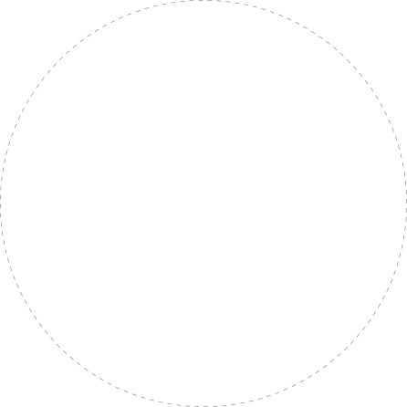

MATERIAL
MATERIAL
精鑄工藝
匠心獨具 質感建築
樺輝建設以究極精神，專注雕琢細節，追求建築每一寸的完美。
更精心嚴選優質的建材，為呈現出極致的品質與細緻，使建築注入生命。
樺輝建設以究極精神，
專注雕琢細節，追求建築每一寸的完美。
更精心嚴選優質的建材，為呈現出
極致的品質與細緻，使建築注入生命。

BUILDING MATERIALS
一磚一瓦，一沙一石，看不到的用心細節上的講究
一磚一瓦，一沙一石，
看不到的用心細節上的講究
我們嚴選指標性建材品牌，為維護居住者最長遠的居住品質
我們嚴選指標性建材品牌，
為維護居住者最長遠的居住品質
水泥:台泥、亞泥
國內水泥一線品牌，榮獲環保署碳足跡
標籤等多項認證，TAF認證混凝土專業實驗室
鋼筋:東和鋼鐵
台灣規模最大品質最可靠鋼筋廠商第一品牌，
通過日本通產省JSMARK工廠認證
鋼骨:長榮重工
長榮重工為國內鋼構廠商第一品牌
制震:新日鐵
日商新日鐵制震為國內豪宅建案，最愛選用之制震系統
日商新日鐵制震為國內豪宅建案，
最愛選用之制震系統
黏著劑:德國亞德士
世界知名外牆磁磚黏著劑品牌，符合歐盟及ISO國際標準
世界知名外牆磁磚黏著劑品牌，
符合歐盟及ISO國際標準
水泥砂漿:美特耐
採用潤泰專利「美特耐工法」，使水泥砂漿材料
配比準確，標準一致，品質穩定又可靠。
採用潤泰專利「美特耐工法」，
使水泥砂漿材料，配比準確，標準一致，
品質穩定又可靠。